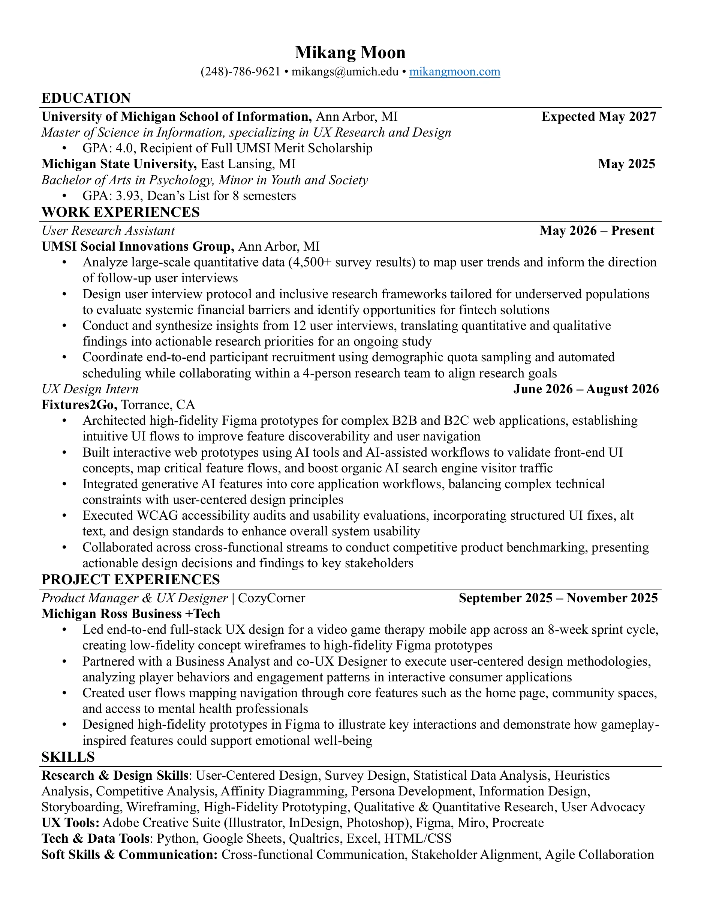

ABOUT ME
Mikang Moon
UX RESEARCHER & DESIGNER
I’m a UX researcher and designer exploring everything from immersive XR and gamified mental health experiences to fintech, e-commerce, and civic technology. I’m on a mission to hear out all sorts of users.
MY STORY
I am a psychology + UX master’s student dedicated to being a voice for overlooked users in the digital space. I read minds to uncover genuine user needs, creating experiences that resonate and make a meaningful impact. With my experience in building authentic relationships and interpersonal connections, I create an environment where people feel comfortable sharing their needs and perspectives openly.
BA IN PSYCHOLOGY
Michigan State University
MS IN INFORMATION (UX CONCENTRATION)
University of Michigan
CORE SKILLS AND TOOLS
🎯 EMPATHIZE WITH USERS
I draw from my psychology background to step into the user’s perspective, uncovering their needs and frustrations to design meaningful, human-centered solutions.
🔍 DIG DEEP WITH RESEARCH
I enjoy asking the right questions, organizing findings, and translating complex data into actionable insights that drive design improvements.
🎮 CREATE PLAYFUL CONNECTIONS
I see video games as more than entertainment—they’re powerful spaces for community and support. I bring this perspective into my work, designing experiences that spark engagement and connection.
RESEARCH METHODS
- User and stakeholder interviews
- Survey design
- Usability testing
- Heuristic evaluation
- Comparative analysis
- Card sorting and affinity mapping
- Personas and storymapping
DESIGN AND PROTOTYPING
- Wireframing
- Prototyping, including with AI
- Vibe coding
- Design systems
- Accessibility design
- Design rationale with QOC
TOOLS
- Figma and Figma Make
- Lovable
- Unity
- Qualtrics
- Webflow
LET’S WORK TOGETHER
Want to talk about research, design, or a project? Reach out, or grab my resume.
